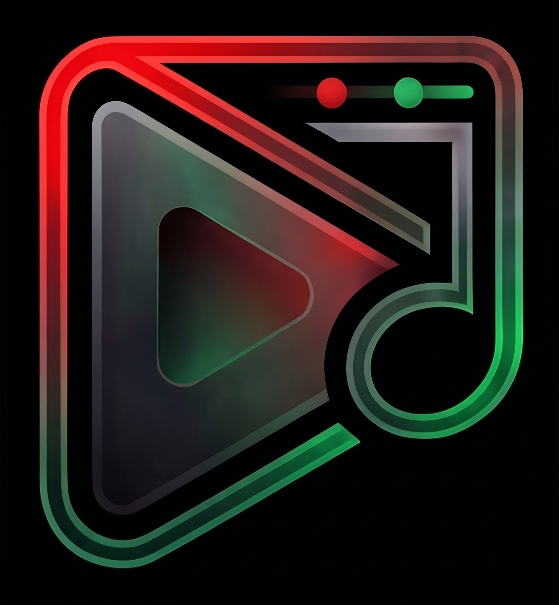

La fiesta sin límites

Cargando canciones...
Sin versiones seleccionadas se incluirán todas.
Sin géneros seleccionados se incluirán todos.
0 canciones disponibles
Música en reproducción a ciegas
Escucha atentamente... ¿De qué año es este hit?
Sintonizando canción...
Video revelado
La carta con este identificador no existe en la base de datos.
Apunta la cámara al código QR de la carta
Aún no has escaneado cartas en esta sesión.